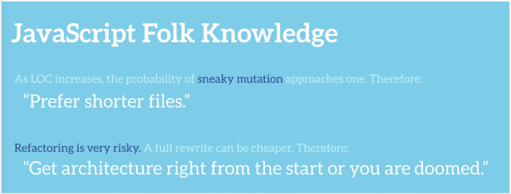
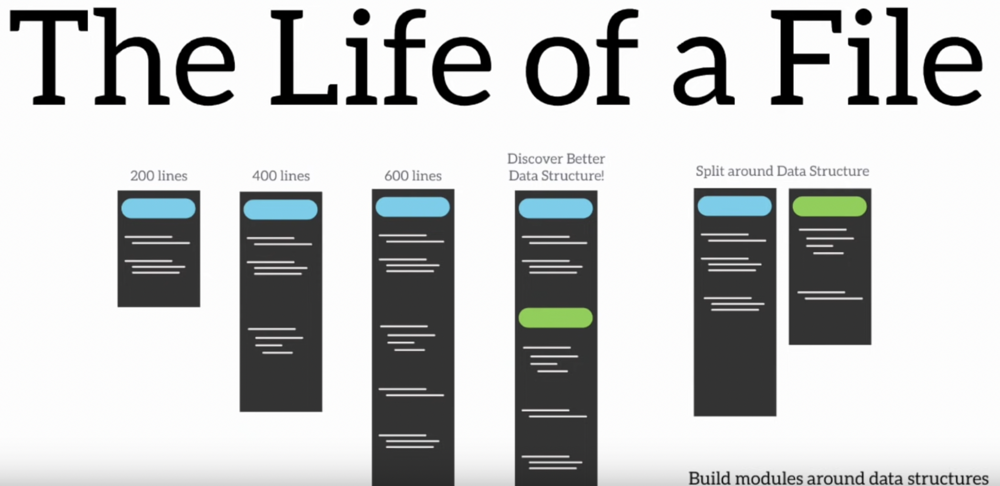
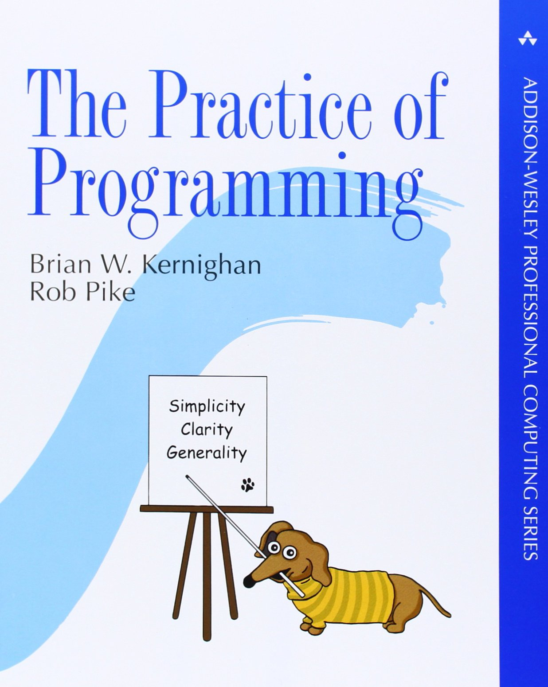

# Optimal Sizing
# Why this talk?
## Why this talk? * Cleaning out unread bookmarks
## Why this talk? * Cleaning out unread bookmarks * Noticed some weren't "common wisdom"
## Why this talk? * Cleaning out unread bookmarks * Noticed some weren't "common wisdom" * Three had a similar theme
## Why this talk? * Cleaning out unread bookmarks * Noticed some weren't "common wisdom" * Three had a similar theme * I don't like our linter rule
## My story of code stlye
## With hopefully not too many diversions
## Or is it digressions?
## I digress...
## This guy! <img src="img/martin-fowler.jpg">
# Martin Fowler
## Martin Fowler * Big influence for a baby programmer
## Martin Fowler * Big influence for a baby programmer * Along with Paul Graham
## Martin Fowler * Big influence for a baby programmer * Along with Paul Graham * I now feel like they influenced through retoric
## Martin Fowler * Big influence for a baby programmer * Along with Paul Graham * I now feel like they influenced through retoric * Re-read all the books you learnt from. How many still hold up?
# FunctionLength
## FunctionLength > During my career, I've heard many arguments about how long a function should be. This is a proxy for the more important question - when should we enclose code in its own function?
## FunctionLength > Some of these guidelines were based on length, such as functions should be no larger than fit on a screen.
## FunctionLength > Some were based on reuse - any code used more than once should be put in its own function, but code only used once should be left inline.
## FunctionLength > The argument that makes most sense to me, however, is the separation between intention and implementation.
## FunctionLength > If you have to spend effort into looking at a fragment of code to figure out what it's doing, then you should extract it into a function and name the function after that “what”. That way when you read it again, the purpose of the function leaps right out at you, and most of the time you won't need to care about how the function fulfills its purpose - which is the body of the function.
## Seems reasonable
## We'll loop back
## Code is read more often than it is written.
## Code should always be written in a way that promotes readability.
## Readability * Attributed to Guido van Rossum * Attributed to Uncle Bob (Robert C. Martin) * Probably not that unique a thought
## Not readable? ``` perl -lne 'print $1 while (/\"((\\.|[^\"])*)\"/g)' filename ```
## Not readable? ``` perl -lne 'print $1 while (/\"((\\.|[^\"])*)\"/g)' filename ``` Prints quoted strings avoiding escaped quotes
## Readability * For extending code * For debugging code * Same structure for both?
# John Carmack on Inlined Code
## On Inlined Code > The real enemy addressed by inlining is unexpected dependency and mutation of state, which functional programming solves more directly and completely. However, if you are going to make a lot of state changes, having them all happen inline does have advantages; you should be made constantly aware of the full horror of what you are doing.
## On Inlined Code ``` void MinorFunction1( void ) { } void MinorFunction2( void ) { } void MinorFunction3( void ) { } void MajorFunction( void ) { MinorFunction1(); MinorFunction2(); MinorFunction3(); } ```
## On Inlined Code ``` void MajorFunction( void ) { MinorFunction1(); MinorFunction2(); MinorFunction3(); } void MinorFunction1( void ) { } void MinorFunction2( void ) { } void MinorFunction3( void ) { } ```
## On Inlined Code ``` void MajorFunction( void ) { // MinorFunction1 // MinorFunction2 // MinorFunction3 } ```
## On Inlined Code > Besides awareness of the actual code being executed, inlining functions also has the benefit of not making it possible to call the function from other places. That sounds ridiculous, but there is a point to it. As a codebase grows over years of use, there will be lots of opportunities to take a shortcut and just call a function that does only the work you think needs to be done.
## On Inlined Code > There might be a FullUpdate() function that calls PartialUpdateA(), and PartialUpdateB(), but in some particular case you may realize (or think) that you only need to do PartialUpdateB(), and you are being efficient by avoiding the other work. Lots and lots of bugs stem from this. Most bugs are a result of the execution state not being exactly what you think it is.
## On Inlined Code > The function that is least likely to cause a problem is one that doesn't exist, which is the benefit of inlining it. If a function is only called in a single place, the decision is fairly simple.
## On Inlined Code > Using large comment blocks inside the major function to delimit the minor functions is a good idea for quick scanning
## On Inlined Code > I know there are some rules of thumb about not making functions larger than a page or two, but I specifically disagree with that now -- if a lot of operations are supposed to happen in a sequential fashion, their code should follow sequentially.
## On Inlined Code > Currently I am leaning towards using heavyweight objects as the reasonable break point for combining code, and trying to reduce the use of medium sized helper objects, while making any very lightweight objects as purely functional as possible if they have to exist at all.
## Functional core, imperative shell?
# On being the right size - Martin Tournoij
## On being the right size > There’s this pattern: “everything should be done in small easy to understand units, which can easily be combined to form larger more complex systems”. Examples include microkernels, microservices, small packages, and small functions.
## On being the right size > Software split in to small functions is often harder to understand. Sure, the individual functions may be easy to understand, but understanding the overal system is much harder.
## Functions are 1D, call graphs are 2D
## On being the right size > Sometimes longer functions in the form of “do this, then do that, then do such” are okay, especially for more complex workflows that naturally belong together. Splitting this up in to tiny functions often doesn’t make the overall logic easier to understand.
## On being the right size > A program should be understandable, not “small” or “DRY”; those are merely tools to achieve this understandability, but not end-goals in themselves. Applying any tool indiscriminately is not going to end well.
## On being the right size > I suspect this is why function (sic) programming hasn’t taken over yet. In spite of all the advantages, actually making useful programs with it is harder than just writing a many simple functions.
# The life of a file - Evan Czaplicki
## The life of a file 
## The life of a file 
# Complexity Has to Live Somewhere - Fred Hebert
## Complexity Has to Live Somewhere > Fighting complexity is a recurring theme of software development I've seen repeat itself over and over again. It's something I keep seeing debated at all levels
## Complexity Has to Live Somewhere > just how much commenting should go on in functions and methods? What's the ideal amount of abstraction? When does a framework start having "too much magic"? When are there too many languages in an organisation?
## Complexity Has to Live Somewhere > We try to get rid of the complexity, control it, and seek simplicity. I think framing things that way is misguided. Complexity has to live somewhere.
## Complexity Has to Live Somewhere > One thing Resilience Engineering has taught me is the concept of Requisite Variety from cybernetics: only complexity can handle complexity.
## Complexity Has to Live Somewhere * if you make the build tool simple, it won't handle all the weird edge cases that exist out there * if you want to handle the weird edge cases, you need to deviate from whatever norm you wanted to establish * if you want ease of use for common defaults, the rules for common defaults must be shared between the tool and the users, who shape their systems to fit the tool's expectations
## Complexity Has to Live Somewhere * if you allow configuration or scripting, you give the users a way to specify the rules that must be shared, so the tool fits their systems * if you want to keep the tool simple, you have to force your users to only play within the parameters that fit this simplicity * if your users' use cases don't map well to your simplicity, they will build shims around your tool to attain their objectives
## Complexity Has to Live Somewhere > This cannot be avoided. Complexity has to live somewhere. It's always a part of people solving problems, whether you realize it or not.
## Complexity Has to Live Somewhere > A common trap we have in software design comes from focusing on how "simple" we find it to read and interpret a given piece of code. Focusing on simplicity is fraught with peril because complexity can't be removed: it can just be shifted around. If you move it out of your code, where does it go?
## Complexity Has to Live Somewhere > The trap is insidious in software architecture. When we adopt something like microservices, we try to make it so that each service is individually simple.
## Complexity Has to Live Somewhere > But unless this simplicity is so constraining that your actual application inherits it and is forced into simplicity, it still has to go somewhere. If it's not in the individual microservices, then where is it?
## Complexity Has to Live Somewhere > Complexity has to live somewhere. If you are lucky, it lives in well-defined places. In code where you decided a bit of complexity should go, in documentation that supports the code, in training sessions for your engineers. You give it a place without trying to hide all of it.
## FunctionLength > If you have to spend effort into looking at a fragment of code to figure out what it's doing, then you should extract it into a function and name the function after that “what”. That way when you read it again, the purpose of the function leaps right out at you, and most of the time you won't need to care about how the function fulfills its purpose - which is the body of the function.
## Still seems reasonable?
## Not every line of code needs to be named
# I, Pencil - Leonard E. Read
## I, Pencil I am a lead pencil—the ordinary wooden pencil familiar to all boys and girls and adults who can read and write.
## I, Pencil Writing is both my vocation and my avocation; that’s all I do. You may wonder why I should write a genealogy. Well, to begin with, my story is interesting. And, next, I am a mystery —more so than a tree or a sunset or even a flash of lightning.
## I, Pencil I, Pencil, simple though I appear to be, merit your wonder and awe, a claim I shall attempt to prove. in fact, if you can understand me—no, that’s too much to ask of anyone—if you can become aware of the miraculousness which I symbolize, you can help save the freedom mankind is so unhappily losing
## I, Pencil Simple? Yet, not a single person on the face of this earth knows how to make me. This sounds fantastic, doesn’t it? Especially when it is realized that there are about one and one-half billion of my kind produced in the U.S.A. each year.
## Innumerable Antecedents * Contemplate all the saws and trucks and rope and the countless other gear used in harvesting and carting the cedar logs * My “lead” itself—it contains no lead at all—is complex. The graphite is mined in Ceylon [Sri Lanka]. Consider these miners and those who make their many tools and the makers of the paper sacks in which the graphite is shipped and those who make the string that ties the sacks and those who put them aboard ships and those who make the ships
# ...
## Levels of abstractions
## But all we have is functions and classes
## ... and services
# Very short functions are a code smell – an overview of the science on function length
## Very short functions are a code smell Take with salt. Software engineering studies are usually either badly done, biased or both Blog posts on the studies are even worse
## Very short functions are a code smell * Mining Metrics to Predict Component Failures, Nagappan et al., 2005 found that the size of the longest method in a class correlates positively with post-relase defects. Does this mean we should refactor our long methods into short ones to avoid defects?
## Very short functions are a code smell * Mining Metrics to Predict Component Failures, Nagappan et al., 2005 found that the size of the longest method in a class correlates positively with post-relase defects. Does this mean we should refactor our long methods into short ones to avoid defects? * Turns out the answer is no. In those same studies, the number of methods also correlates with defects
## Very short functions are a code smell Another experiment was performed in 2016 in Effects of Clean Code on Understandability, Henning Grimeland Koller, 2016, Master’s Thesis. A program had been modified with advice taken from “Clean Code” by Robert C. Martin, for example by extracting code to functions with descriptive names. Out of 10 participants 5 subjects were assigned to work on the refactored version and 5 on the unrefactored. The participants were then asked to complete a series of three tasks:
## Very short functions are a code smell 1. Adding new functionality 2. Changing existing functionality 3. Fixing a bug
## Very short functions are a code smell The author concludes that the participants working with longer functions were faster at debugging and with implementing new features but slower when modifying existing features. However, it appears there are no statistical significance tests, which would’ve been helpful due to the low sample size and close results when measuring time taken with adding new functionality.
## Very short functions are a code smell The third study is from 2015 (Old habits die hard – Why refactoring for understandability does not give immediate benefits, Ammerlaan et al, 2015), where professional developers conducted a bug fixing task on refactored and unrefactored code they were unfamiliar with
## Very short functions are a code smell In the experiment the bug fix took less time in the original, non-refactored version (roughly 8.5 minutes vs 14.5 minutes) and the result was statistically significant. The authors suggest that this is due to developers being used to the old conventions, although this can also be taken to support the results of the previous experiment where bug fixing times were longer with shorter functions.
## Longer functions limit context and aid code comprehension (my own conclusion)
# Some (limited) historical context
## Some (limited) historical context ``` real :: tintrinsic real, allocatable :: ain(:), aout(:) integer(int64) :: tic, toc, rate allocate(ain(N), aout(N)) call random_number(ain) call system_clock(tic,count_rate=rate) aout = atan(ain) call system_clock(toc) tintrinsic = (toc-tic)/real(rate) ```
## Some (limited) historical context * Fortran has functions and subroutines * Functions are mathematical * Subroutines are to break up the code
## Subroutines take their input and output as parameters
## Both are without stacks (in early fortran) and tend to reference global variables
## Breaking a program up becomes a long sequence of steps which calls another long sequence of steps
## Smalltalk?
## Smalltalk was imagined as a computing environment like Unix
## Smalltalk is a bag of small parts to piece together yourself
## Like lego?
## Like lego?
## Like lego? Lego is the least composable construction toy :)
## Smalltalk is a bag of small composable tools
## Like the unix philosophy?
## Like the unix philosophy? > those days are dead and gone and the eulogy was delivered by Perl. -- Rob Pike
## Like the unix philosophy? 
## Like the unix philosophy? Users want software that does meaningful things. Developers want composable tools
## Functional core, imperative shell